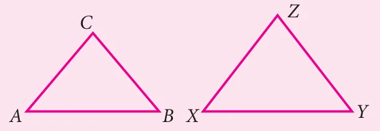
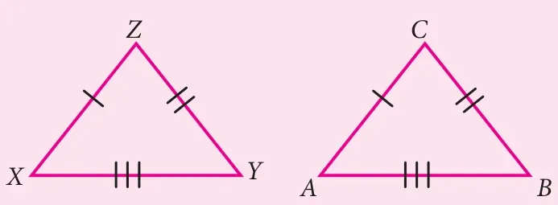
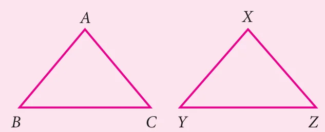
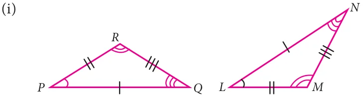
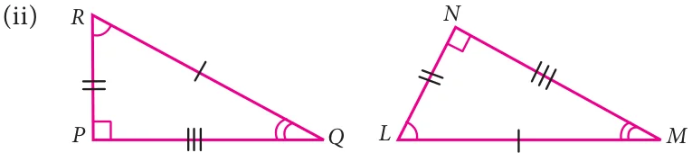
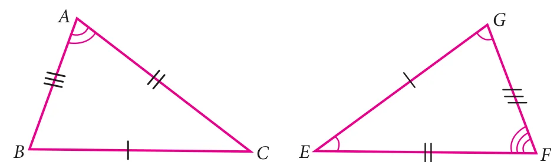
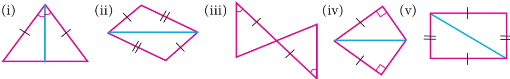
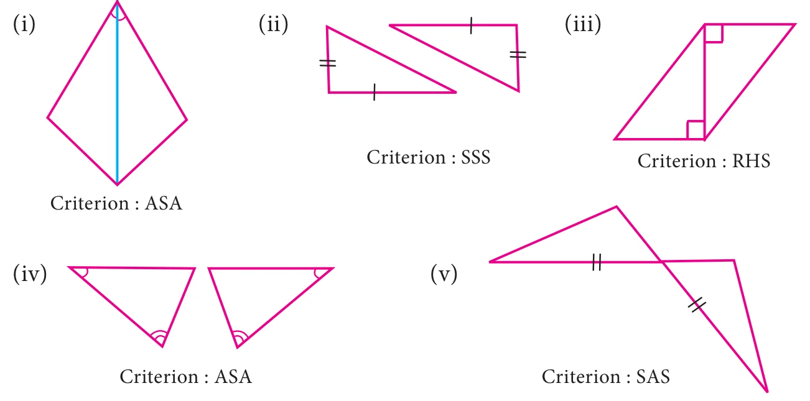
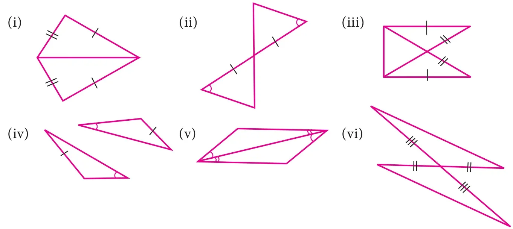
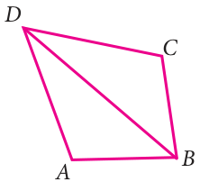

Note
We learnt the congruency criterions of triangles. The following ordered combinations of measurement of triangles will not be sufficient to prove congruency of triangles.
Angle - Angle - Angle (AAA) combination will not always prove triangles congruent. This combination will give triangles of same shape but not of same size.
Side - Side - Angle (or) Angle - Side - Side (SSA or ASS) combination also will not prove congruency of triangles. This combination deals with two sides and a non-included angle.
Try these
- If \(\triangle ABC \cong \triangle XYZ\) then list the corresponding sides and corresponding angles.

- Given triangles are congruent. Identify the corresponding parts and write the congruent statement.

- Mention the conditions needed to conclude the congruency of the triangles with reference to the above said criterions. Give reasons for your answer.

- Given that \(\triangle ABC \cong \triangle DEF\) (i) List all the corresponding congruent sides (ii) List all the corresponding congruent angles.
- If the given two triangles are congruent, then identify all the corresponding sides and also write the congruent angles.


- If the given triangles \(\triangle ABC\) and \(\triangle EFG\) are congruent, determine whether the given pair of sides and angles are corresponding sides or corresponding angles or not.

- \(\angle A\) and \(\angle G\)
- \(\angle B\) and \(\angle E\)
- \(\angle B\) and \(\angle G\)
- \(\overline{AC}\) and \(\overline{GF}\)
- \(\overline{BA}\) and \(\overline{FG}\)
- \(\overline{EF}\) and \(\overline{BC}\)
- State whether the two triangles are congruent or not. Justify your answer.

- To conclude the congruency of triangles, mark the required information in the following figures with reference to the given congruency criterion.

- For each pair of triangles state the criterion that can be used to determine the congruency?

- Construct a triangle \(XYZ\) with the given conditions.
- \(XY = 6.4\text{ cm}\), \(ZY = 7.7\text{ cm}\) and \(XZ = 5\text{ cm}\)
- An equilateral triangle of side \(7.5\text{ cm}\)
- An isosceles triangle with equal sides \(4.6\text{ cm}\) and third side \(6.5\text{ cm}\)
- Construct a triangle \(ABC\) with given conditions.
- \(AB = 7\text{ cm}\), \(AC = 6.5\text{ cm}\) and \(\angle A = 120^{\circ}\).
- \(BC = 8\text{ cm}\), \(AC = 6\text{ cm}\) and \(\angle C = 40^{\circ}\).
- An isosceles obtuse triangle with equal sides \(5\text{ cm}\)
- Construct a triangle \(PQR\) with given conditions.
- \(\angle P = 60^{\circ}\), \(\angle R = 35^{\circ}\) and \(PR = 7.8\text{ cm}\)
- \(\angle P = 115^{\circ}\), \(\angle Q = 40^{\circ}\) and \(PQ = 6\text{ cm}\)
- \(\angle Q = 90^{\circ}\), \(\angle R = 42^{\circ}\) and \(QR = 5.5\text{ cm}\)
- Construct a triangle \(XYZ\) with the given conditions.
Objective type questions
- If two plane figures are congruent then they have
- same size
- same shape
- same angle
- same shape and same size
- Which of the following methods are used to check the congruence of plane figures?
- translation method
- superposition method
- substitution method
- transposition method
- Which of the following rule is not sufficient to verify the congruency of two triangles.
- SSS rule
- SAS rule
- SSA rule
- ASA rule
- Two students drew a line segment each. What is the condition for them to be congruent?
- They should be drawn with a scale.
- They should be drawn on the same sheet of paper.
- They should have different lengths.
- They should have the same length.
- In the given figure, \(AD = CD\) and \(AB = CB\). Identify the other three pairs that are equal.

- \(\angle ADB = \angle CDB\), \(\angle ABD = \angle CBD\), \(BD = BD\)
- \(AD = AB\), \(DC = CB\), \(BD = BD\)
- \(AB = CD\), \(AD = BC\), \(BD = BD\)
- \(\angle ADB = \angle CDB\), \(\angle ABD = \angle CBD\), \(\angle DAB = \angle DBC\)
- In \(\triangle ABC\) and \(\triangle PQR\), \(\angle A = 50^{\circ} = \angle P\), \(PQ = AB\), and \(PR = AC\). By which property \(\triangle ABC\) and \(\triangle PQR\) are congruent?
- SSS property
- SAS property
- ASA property
- RHS property